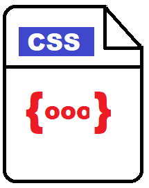

Hojas de Estilo en Cascada CSS
Los efectos CSS se aplican “en cascada”, ya que podemos tener
varias hojas de estilo distintas en la misma página
El color puede tomarse de un estilo vinculado en un .css mientras que el
tamaño puede venir de un estilo en la cabecera
Si los estilos son contradictorios, se emplean varios criterios
Quién ha definido el estilo: el usuario puede definir sus propios estilos y
también el navegador tiene estilos por defecto.! !
Especificidad: ganan los selectores más específicos
Orden de definición: gana la última regla
Colomina Pardo, O., Arques Corrales, P., & Montoyo-Bojo, J. (2011). Tema 2, parte 2: Hojas de estilo para la web. CSS. Tecnologías Web. tomado de: http://rua.ua.es/dspace/bitstream/10045/19903/1/2.2.css.pdf